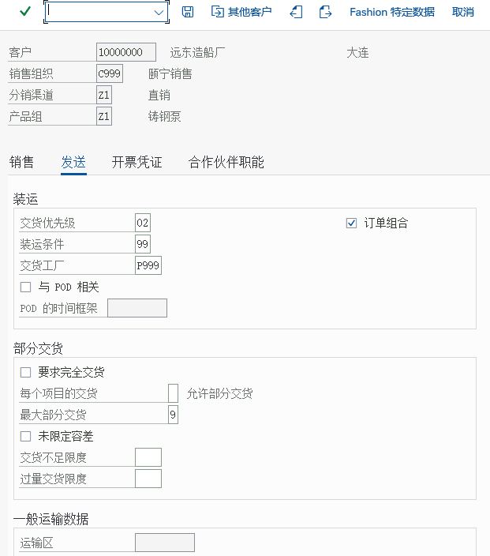
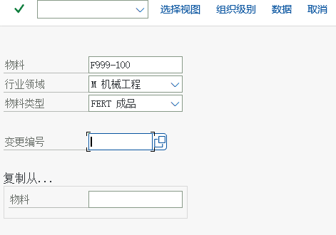
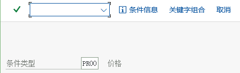

主数据：客户、物料、价格
客户主数据三层 · 四个伙伴角色 · 物料销售视图 · 条件记录 · 真实画面
1. 三类主数据的分工
| 主数据 | 回答 | 层次 | 建它的 T-code |
|---|---|---|---|
| 客户主数据 | 卖给谁：谁下单、货送哪、票开给谁、谁付钱。还带出销售范围、付款条件、税分类等 | 一般数据 / 公司代码数据 / 销售范围数据（三层） | VD01（创建，销售视图）、VD02（更改）、XD01/BP（S/4HANA 客户主数据） |
| 物料主数据 | 卖什么：能不能卖、按什么单位卖、税率分类、账户分配组、装运条件 | 一般 / 工厂 / 采购 / 销售（销售范围级）等视图 | MM01（创建）、MM02（更改）、MM03（显示） |
| 条件记录 | 多少钱：单价、折扣、运费、销项税 | 按销售范围 / 客户 / 物料等键组合 | VK11（创建）、VK12（更改）、VK13（显示） |
为什么客户主数据有「三层」因为一家公司可能同时服务于多个公司代码和多个销售范围：客户的一般信息（名称、地址、税号）全公司共用；公司代码层放付款条件、对账科目等财务信息；销售范围层放销售相关的数据（销售范围、客户定价过程、运送条件、伙伴角色等）。所以「同一个客户」在不同销售范围里可以有不同设置。
2. 客户主数据
| 层 / 页签 | 放什么 | 影响什么 |
|---|---|---|
| 一般数据（General） | 名称、地址、税号、联系人、通讯方式 | 全公司共用；地址也是开票/交货的默认送达信息 |
| 公司代码数据（Company Code） | 对账科目、付款条件、催款、利息 | 发票过账时贷方应收科目、账期 |
| 销售范围数据（Sales Area） | 销售范围、客户定价过程、运送条件、客户组、税分类、账户分配组、伙伴角色 | 定价格、定税、定发货方式、定收入科目 |
IMG 路径（维护客户账户组的销售数据 / 屏幕格式）财务会计(新) → 应收账款和应付账款 → 客户账户 → 主数据 → 创建客户主记录准备 → 定义带有屏幕格式的账户组（客户）
教材第一步先配「客户账户组」：它决定销售视图里哪些字段必填、哪些可见、哪些可选。这是「客户主数据屏幕长什么样」的开关。课程场景里用的是账户组 K001「订货方-颐宁」。

IMG 路径（创建客户销售视图）后勤 → 销售和分销 → 主数据 → 业务伙伴 → 客户 → 创建 → VD01
{kind=link}


课程场景（教材环境）的真实值
| 对象 | 值 | 出处（画面） |
|---|---|---|
| 客户（售达方） | 10000000 远东造船厂 / 大连 | VD01 画面（画面 3） |
| 送达方 | 10000000 远东造船厂第三分公司 | VD02 初始屏幕 |
| 客户账户组 | K001 订货方-颐宁 | 账户组维护画面（画面 1） |
| 客户销售视图（装运） | 装运条件 99、交货工厂 P999、交货优先级 02、勾选「订单组合」 | VD01 销售视图（画面 3） |
| 物料 | F999-100 铸钢泵 170-230（物料类型 FERT 成品、行业领域 M 机械工程） | MM01 画面（画面 6） |
| 销售价格（PR00） | 8,000.00 RMB／PC，有效期 2021.01.01 – 9999.04.14 | VK11 画面（画面 8） |
这些值的用法上课时让学员在自己系统里查「同一类数据长什么样」，而不是记住
C999 / F999-100这些练习编码。截图里的数值是教材环境的实际值，用于对照字段位置与相互关系。3. 四个伙伴角色（Partner Roles）
一张订单里有四种「角色」，可能是同一个客户，也可能是不同公司：
| 角色 | 代码 | 含义 | 教材场景 |
|---|---|---|---|
| 售达方 Sold-to Party | AG | 下单的人（订单里的「客户」字段） | 远东造船厂 |
| 送达方 Ship-to Party | WE | 收货的人/地方（交货送到这里） | 远东造船厂第三分公司 |
| 收票方 Bill-to Party | RE | 发票开给谁 | 通常同售达方 |
| 付款方 Payer | RG | 谁付钱（决定应收） | 教材发票画面里的付款方 10000000 |
角色代码怎么看不同系统的伙伴角色代码可能不同（教材用 SH 表示送货方/送达方，标准配置里常见 WE / SH 混用，取决于是「装运」还是「交货」视图）。以自己系统 F4 的取值表为准。
IMG 路径（把收货方分配给订货方）后勤 → 销售和分销 → 主数据 → 业务合作伙伴 → 客户 → 更改 → VD02


4. 物料主数据（销售视图）
物料主数据里与 SD 相关的字段主要在销售视图（销售组织 / 分销渠道级）和工厂级。课程场景里对外销售两个物料：产成品「铸钢泵 170-230」和贸易商品「高速增压涡轮泵」。
| 字段 | 作用 | 影响到 |
|---|---|---|
| 销售单位 / 基本单位 | 卖给客户的计量单位 | 订单数量与价格单位 |
| 物料组 / 产品层次 | 统计与分类 | 报表分析 |
| 项目类别组 Item Category Group | 决定订单行的项目类别（是否定价、是否交货、是否开票） | 订单行的行为 |
| 税分类 Tax Classification | 与客户税分类组合 → 决定税码（销项税） | 税额 |
| 账户分配组 Account Assignment Group | 与客户账户分配组 + 账码一起决定收入科目 | 会计凭证 |
| 装运条件 / 装载组 | 与客户运送条件、工厂一起决定起运点与装载点 | 发货从哪发 |
| 销售状态 / 物料统计组 | 能不能卖；进不进销售分析 | VA01 能否带出该物料；MCTA 有没有数据 |
IMG 路径（维护物料主数据的销售视图）后勤 → 物料管理 → 物料主记录 → 物料 → 创建（一般） → MM01 立即
{kind=link}

5. 条件记录：价格到底放在哪
价格不在物料主数据里，而在条件记录里：按条件类型（如 PR00 销售价格、MWST 销项税）维护，键组合通常是「销售组织 + 分销渠道 + 物料」。PR00 的存取顺序决定「先找谁的价」。
IMG 路径（维护物料的销售价格）后勤 → 销售和分销 → 主数据 → 条件 → 按条件类型选择 → VK11 → 创建
{kind=link}



三个高频问题
- 订单里价格是空的/为 0：条件记录没建，或条件记录的键与订单的销售范围/客户不匹配，或条件记录已过期。
- 改了价格，老订单没变：单据存的是当时的价格快照；需要手动重新定价。
- 想给某客户专用价：用含客户的条件表维护客户专用条件记录，并把它的存取顺序放在一般价之前。
6. 主数据相关任务索引（教材）
| 任务 | 标题 | 教材 IMG / 菜单路径 | T-code | 画面数 |
|---|---|---|---|---|
| 任务 21 | 维护客户账户组的销售数据 | 财务会计(新) → 应收账款和应付账款 → 客户账户 → 主数据 → 创建客户主记录准备 → 定义带有屏幕格式的账户组（客户） | — | 16 |
| 任务 34 | 维护物料主数据的销售视图 | 后勤 → 物料管理 → 物料主记录 → 物料 → 创建（一般） → MM01 立即 | MM01 | 10 |
| 任务 35 | 维护物料的销售价格 | 后勤 → 销售和分销 → 主数据 → 条件 → 按条件类型选择 → VK11 → 创建 | VK11 | 5 |
| 任务 36 | 维护销项税税率 | 后勤 → 销售和分销 → 主数据 → 条件 → 按条件类型选择 → VK11 → 创建 | VK11 | 4 |
| 任务 37 | 维护订货方主数据的销售视图 | 后勤 → 销售和分销 → 主数据 → 业务伙伴 → 客户 → 创建 → VD01 | VD01 | 13 |
| 任务 38 | 维护收货方的销售视图 | 后勤 → 销售和分销 → 主数据 → 业务合作伙伴 → 客户 → 创建 VD01 | VD01 | 6 |
| 任务 39 | 将收货方分配给订货方 | 后勤 → 销售和分销 → 主数据 → 业务合作伙伴 → 客户 → 更改 → VD02 | VD02 | 4 |
7. 自检
| 要确认的事 | 怎么确认 |
|---|---|
| 客户在某个销售范围有没有销售视图 | VD03 / XD03 输入客户与销售范围；表 KNVV |
| 物料有没有销售视图 | MM03 → 附加 → 销售组织数据；表 MVKE |
| 价格从哪里来 | VA03 → 项目 → 条件页签，看每行的条件类型、来源（存取顺序第几步找到的） |
| 税额为什么是这个数 | VA03 项目条件里看 MWST 行，再对照客户/物料税分类（后台） |